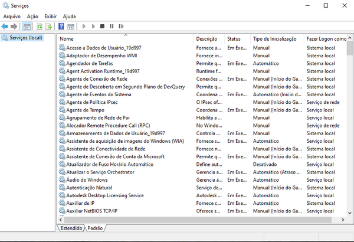

Cada programa rodando em nosso computador pertence a um serviço, lembrando que nem todos os programas que rodam num computador precisam ter uma interface gráfica (janela, caixa de mensagem etc.) visível. Os programas que não estão visualmente ativos, pertencem a processos que rodam em “segundo plano”.
Alguns serviços são fundamentais para o funcionamento do computador, e costumam iniciar imediatamente quando o computador é ligado. O Windows fornece uma lista completa com os serviços disponíveis, diferenciando os que estão ativos, os que estão marcados para iniciar com o Windows e os que estão desativados. Já vimos que podemos acessar essa lista de serviços pelo Gerenciador de Tarefas, mas podemos acessar ainda o aplicativo Serviços e iniciar ou parar um serviço ou marcá-lo como “Manual”, ou seja, que não iniciará automaticamente.
Para acessar o aplicativo Serviços vá até Iniciar → Ferramentas Administrativas → Serviços.
Você pode ainda abrir o aplicativo Serviços pressionando ⊞+R e digitando: services.msc
Tome cuidado para não desativar serviços essenciais para o funcionamento do computador, alguns controlam conexão de rede, execução de áudio e vídeo entre outras tarefas importantes.